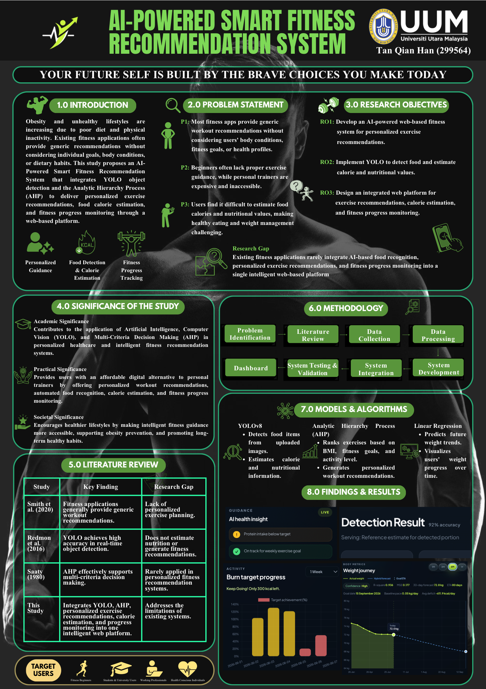
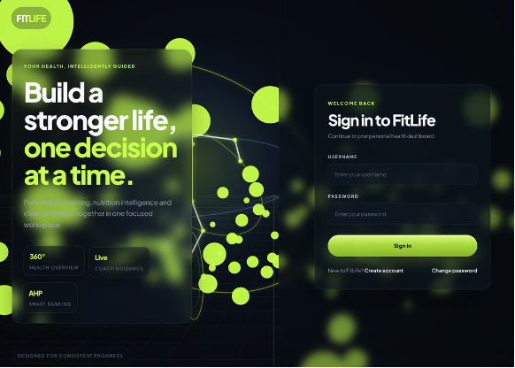
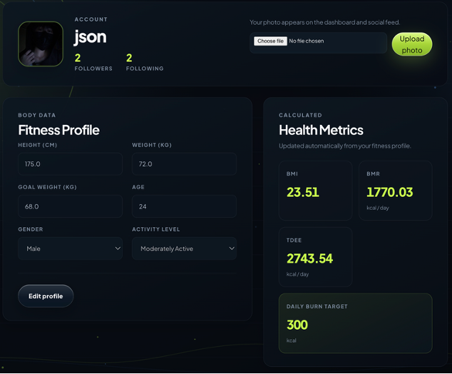
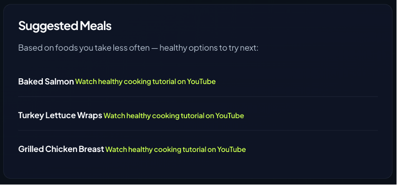
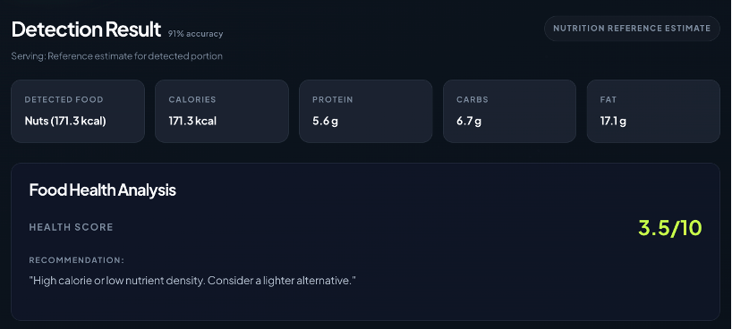
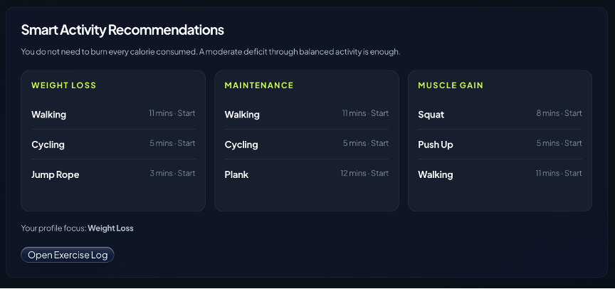
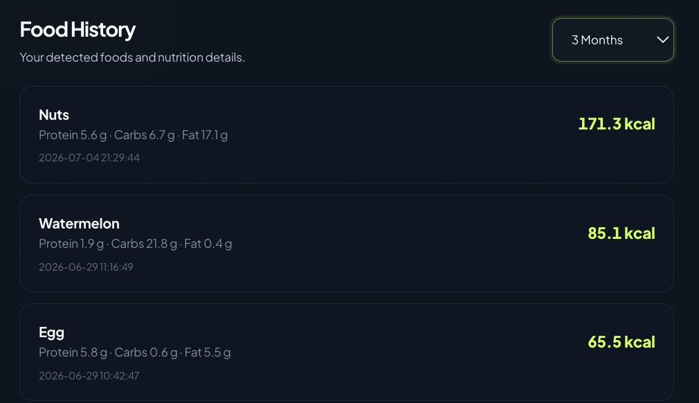

FINAL YEAR PROJECT E-PORTFOLIO
Smart Fitness Recommendation System
A web-based health support system integrating BMI and TDEE calculation, YOLOv8 food detection, calorie estimation and AHP-based personalised exercise recommendations.
Student
Tan Qian Han
Programme
B.Sc. (Hons.) Decision Science
University
Universiti Utara Malaysia
WELCOME BACK
Health Dashboard
TQH
82
Health Score
Healthy progress
Your plan is on track
AI-assisted nutrition monitoring and exercise planning.
YOLOv8 Detection
Food recognised
AHP Ranking
Exercise selected
WELCOME
My Final Year Project Journey
Welcome to my Final Year Project e-Portfolio. This portfolio documents the research, planning, development, testing and learning experiences involved in completing my project entitled “Smart Fitness Recommendation System.”
The project combines health calculations, artificial intelligence, computer vision and multi-criteria decision-making to support healthier lifestyle choices. It allows users to manage personal profiles, calculate BMI and TDEE, identify food from images, estimate calorie intake and receive ranked exercise recommendations.
This portfolio presents the project background, research objectives, weekly progress, system modules, technical evidence, challenges, achievements and personal reflection gained throughout the project.

View full posterABOUT ME
Student Profile
Introduce your academic background, technical interests and professional aspiration.

Tan Qian Han
Final-Year Decision Science Student
About Me
I am a final-year undergraduate student pursuing a Bachelor of Science with Honours in Decision Science at Universiti Utara Malaysia. My academic journey has strengthened my analytical thinking, problem-solving and data-driven decision-making abilities.
I am particularly interested in data analytics, artificial intelligence, machine learning, computer vision and system development. Through this project, I applied Python, Flask, YOLOv8, SQLite and the Analytic Hierarchy Process to develop a practical health recommendation system.
Technical Skills
Soft Skills
Career Aspiration
I aspire to build a career in data analytics, data science or artificial intelligence, where I can transform data into meaningful insights and create technology-based solutions for real-world problems.
Resume
Download my latest resume for internship and career opportunities.
PROJECT SYNOPSIS
Smart Fitness Recommendation System
A concise overview of the research problem, proposed solution and expected contribution.
Overview
The Smart Fitness Recommendation System is a web-based health application designed to help users understand their personal energy needs, monitor food intake and receive exercise guidance tailored to their goals. Rather than relying on manual calorie logging and generic fitness advice, the system combines health analytics, computer vision and structured decision-making into one integrated platform.
Users begin by creating a secure profile and entering body metrics such as height, weight, age, gender and activity level. The system then calculates BMI, BMR and TDEE to determine weight status and recommended daily calorie intake. Food images can be uploaded or captured via camera, after which a custom YOLOv8 model detects food items, estimates nutritional content and stores the results for later review.
For exercise planning, the Analytic Hierarchy Process (AHP) evaluates alternatives using weighted criteria and recommends suitable activities based on the user’s fitness goal and selected body area. Developed with Python, Flask and SQLite, the project demonstrates how Decision Science and artificial intelligence can be applied to create a practical, explainable and user-centred health support system.
Research Focus
Personalised health monitoring through integrated AI and decision analysis.
Core Technologies
Python, Flask, YOLOv8, OpenCV, SQLite and AHP.
Expected Outcome
A functional web system that automates food logging and ranks exercises transparently.
Academic Contribution
Combines computer vision with multi-criteria decision-making for fitness guidance.
PROJECT PAGE
About My Final Year Project
Smart Fitness Recommendation System Using YOLO Food Detection and AHP-Based Exercise Recommendation
Project Background
Maintaining a healthy lifestyle requires users to understand their energy needs, food intake and suitable physical activities. However, many users find manual calorie tracking inconvenient and receive generic exercise advice that may not match their body condition, target body area or goals.
The proposed system integrates health calculations, computer vision and decision analysis into one web application. It provides a more convenient way to monitor food intake and obtain personalised fitness guidance.
Problem Statement
Existing fitness applications often depend on manual food entry and may provide generalised exercise recommendations. Users may not know their appropriate calorie requirements or which exercises best match their needs.
A unified system is therefore needed to automatically identify food, estimate calories, calculate personal health indicators and recommend exercises through a transparent decision-making method.
1.4 RESEARCH QUESTIONS
Research Questions
Based on the problem statements discussed in the previous section, this study aims to answer the following research questions:
- How can an AI-powered web-based system provide personalised fitness recommendations for weight management?
- How can Body Mass Index (BMI), Basal Metabolic Rate (BMR) and Total Daily Energy Expenditure (TDEE) be integrated to generate personalised nutritional recommendations?
- How can You Only Look Once (YOLO) improve the efficiency and accuracy of food calorie tracking through automatic food recognition?
RESEARCH OBJECTIVES
Research Objectives
The main objective of this study is to develop an intelligent web-based fitness recommendation system that assists users in managing their weight through personalised nutrition and exercise recommendations.
The specific objectives are as follows:
-
01
To develop an AI-powered web-based fitness recommendation system for healthy weight management.
-
02
To calculate users' nutritional requirements using Body Mass Index (BMI), Basal Metabolic Rate (BMR) and Total Daily Energy Expenditure (TDEE).
-
03
To implement YOLO object detection for automatic food recognition and calorie estimation.
-
04
To apply the Analytic Hierarchy Process (AHP) to rank and recommend suitable exercises based on multiple evaluation criteria.
User Management
Registration, secure login, password hashing and personal profile storage.
Health Analysis
BMI, TDEE, weight category and daily calorie recommendation.
Food Recognition
Image upload or camera input with YOLOv8 food-object detection.
Exercise Ranking
AHP-based recommendations according to user needs and selected body area.
RESEARCH METHODOLOGY
Systematic Development Process
Literature Review
Review health, calorie, food detection and exercise recommendation studies.
Requirement Analysis
Identify users, system functions, input requirements and expected outputs.
System Design
Design architecture, database, interface, workflow and recommendation logic.
Model Development
Prepare food data and train the custom YOLOv8 detection model.
Implementation
Integrate Python, Flask, SQLite, OpenCV, YOLO and AHP modules.
Testing
Validate functions, calculations, detection output and system usability.
PROJECT CHALLENGES
Challenges and Solutions
Key difficulties encountered during development and how they were addressed.
Challenge
Training YOLO Dataset
Solution
Prepared a labelled food image dataset, configured YOLOv8 training parameters and iteratively evaluated model performance to improve detection accuracy.
Challenge
Collecting Food Images
Solution
Gathered food images from multiple sources, standardised labelling format and organised classes to ensure sufficient variety for model training.
Challenge
Camera Compatibility
Solution
Implemented OpenCV-based camera capture with image upload as a fallback so users could still submit food photos when live camera access was unavailable.
Challenge
Flask Integration
Solution
Structured the application into modular Flask routes and Python components, allowing health calculations, detection and recommendation features to work within one web system.
Challenge
SQLite Relationship
Solution
Designed relational database tables with foreign keys to connect user profiles, food detection records and history data consistently.
Challenge
Debugging Model Path
Solution
Used consistent relative file paths and tested model loading across different environments to prevent path errors during deployment and execution.
WEEKLY PROGRESS
Project Development Timeline
Update the details below so they match your actual logbook and supervisor meetings.
01
Week 1
Topic Selection and Initial Planning
Activities
Discussed possible project topics, identified a health-related problem and selected the Smart Fitness Recommendation System.
Reflection
I learned that a good project must solve a meaningful problem while remaining realistic within the available time and resources.
02
Week 2
Literature Review
Activities
Reviewed studies related to BMI, TDEE, calorie estimation, food recognition, YOLO and exercise recommendation.
Reflection
This stage helped me understand the research gap and establish a stronger academic foundation for the system.
03
Week 3
Proposal and Requirement Analysis
Activities
Prepared the problem statement, objectives, project scope, functional requirements and proposed solution.
Reflection
I improved my ability to connect the research problem, objectives and proposed system functions logically.
04
Week 4
System and Database Design
Activities
Designed the system workflow, database tables, user interface structure and application modules.
Reflection
Planning the architecture before coding reduced confusion and made module integration more systematic.
05
Week 5
User Authentication Development
Activities
Developed registration, login, user profile and password-change functions using SQLite and bcrypt.
Reflection
I learned the importance of protecting user credentials rather than storing plain-text passwords.
06
Week 6
BMI and TDEE Module
Activities
Implemented BMI classification, BMR and TDEE calculations and personalised calorie recommendations.
Reflection
This stage strengthened my understanding of converting health formulas into usable system functions.
07
Week 7
Food Dataset Preparation
Activities
Collected, labelled and organised food images before training the YOLOv8 detection model.
Reflection
I realised that model quality depends greatly on accurate labels and sufficiently varied training images.
08
Week 8
YOLOv8 Training and Evaluation
Activities
Trained the custom model, reviewed prediction results and adjusted dataset or training settings where necessary.
Reflection
Model training required patience because improvements depended on repeated testing and careful error analysis.
09
Week 9
Food Detection Integration
Activities
Integrated image upload, camera capture, bounding-box output, detected food names and calorie estimates into Flask.
Reflection
I gained practical experience integrating a machine-learning model into a working web application.
10
Week 10
AHP Exercise Recommendation
Activities
Defined exercise criteria, applied AHP weights and ranked exercises according to user preferences and selected body areas.
Reflection
This module demonstrated how Decision Science can make recommendation logic more structured and explainable.
11
Week 11
History and Data Visualisation
Activities
Stored detection records and developed date filters, summaries and visualisations for users’ food history.
Reflection
I learned to present stored information in a form that users can understand quickly.
12
Week 12
System Testing and Debugging
Activities
Tested each module, corrected database and interface errors, and checked calculation and recommendation outputs.
Reflection
Testing showed that a system is not complete merely because it runs; each output must also be accurate and consistent.
13
Week 13
Poster and Presentation Preparation
Activities
Prepared the FYP poster, presentation slides, system demonstration and possible viva responses.
Reflection
I improved my ability to explain complex technical work clearly to a non-technical audience.
14
Week 14
Final Report and Portfolio
Activities
Completed the final report, revised references, organised evidence and developed this e-Portfolio.
Reflection
This final stage helped me appreciate the progress made from the initial idea to a functioning application.
REFLECTION
What I Learned From This Project
Technical Growth
I improved my programming ability by building a multi-page Flask application and connecting user authentication, calculations, computer vision, recommendation logic and database operations.
Research Growth
I learned how to identify a research problem, review literature, define objectives, choose suitable methods and present findings in an academic form.
Problem Solving
Errors involving packages, environments, cameras, model paths, databases and interface keys required me to investigate causes systematically and test different solutions.
Personal Development
Completing the project strengthened my patience, time management, confidence, independent learning and willingness to continue improving.
“The most valuable outcome of this project was not only the completed system, but also the ability to learn independently, overcome uncertainty and transform an initial idea into a functional solution.”
SYSTEM DEVELOPMENT
Smart Fitness System Modules
A complete walkthrough of the Smart Fitness system modules and technology stack.
SYSTEM ARCHITECTURE
System Architecture Diagram
User
↓
Login System
↓
Dashboard
↓
BMI Module
TDEE Module
Food Detection
Exercise Recommendation
↓
YOLOv8
SQLite Database
AHP Engine
↓
Results
SYSTEM WORKFLOW
Flowchart
Start
↓
Login
↓
Input User Information
↓
Calculate BMI
↓
Upload Food
↓
YOLO Detection
↓
Calculate Calories
↓
Choose Body Part
↓
AHP Recommendation
↓
Save History
↓
End
01
User Registration and Login
New users can create an account and log in before accessing personalised features. Passwords are protected using bcrypt hashing, while profile data are stored in SQLite.
- User registration and validation
- Secure password storage
- Login session management
- Password-change function

02
BMI and TDEE Calculation
The module uses personal data such as height, weight, age, gender and activity level to calculate BMI, BMR and TDEE. It then displays weight status and daily calorie guidance.
- BMI result and category
- Basal Metabolic Rate
- Total Daily Energy Expenditure
- Recommended calorie intake

03
Nutrition Recommendation
Based on the user’s profile, current weight and desired weight, the system provides calorie guidance to support safe and realistic weight management.
- Personal calorie target
- Weight-management guidance
- Health-status feedback
- Easy-to-read summaries

04
YOLOv8 Food Detection
Users can upload an image or capture one using a camera. The custom YOLOv8 model detects supported food items, draws bounding boxes and produces an estimated calorie total.
- Image upload and camera input
- Food-object detection
- Bounding-box visualisation
- Calorie estimation and saving

05
AHP Exercise Recommendation
The Analytic Hierarchy Process evaluates exercise alternatives using weighted criteria. The module then recommends suitable exercises based on the selected body part and user requirements.
- Body-part selection
- Weighted decision criteria
- Exercise scoring and ranking
- Personalised recommendation output

06
Food Detection History
Detection results are stored with the date, time, detected food items and calorie information. Users can filter records and review previous intake.
- Date-based record filtering
- Detected-food summaries
- Calorie-history display
- Visual data presentation

TOOLS USED
Technology Stack
PROJECT EVIDENCE
Results and Demonstration
Final Report
Complete FYP report documenting research, methodology and system evaluation.
View documentFYP Poster
Academic poster summarising the project objectives, methods and results.
Download posterFUTURE WORK
Recommendations for Future Enhancement
Several improvements can be considered to enhance the capability of the proposed system in future studies.
While the current system successfully integrates health calculations, food recognition and exercise ranking, further development could significantly improve accuracy, scalability and real-world applicability. The recommendations below outline practical directions for extending this research.
Expanded Food Dataset
The food recognition model can be improved by expanding the training dataset to include a greater variety of local and international food items. A larger dataset would improve detection accuracy and increase the applicability of the system to more diverse dietary habits.
Wearable Device Integration
Future studies may integrate wearable devices such as smartwatches or fitness trackers to automatically collect physiological data, including heart rate, step count, calories burned and sleep quality. Such integration would enable the system to generate more dynamic and personalised recommendations based on real-time user activity.
Adaptive Exercise Learning
The exercise recommendation module may be enhanced by incorporating machine learning techniques that continuously learn from users' exercise history and preferences. Rather than relying solely on predefined AHP scores, future systems could adapt recommendations according to user behaviour and exercise performance over time.
Cloud & Mobile Deployment
Cloud-based database management systems such as MySQL or PostgreSQL may be adopted to support multiple users simultaneously and improve scalability. Developing dedicated Android and iOS mobile applications would also improve accessibility and allow users to monitor their fitness more conveniently.
Comprehensive Health Indicators
Future research may incorporate additional health indicators such as body fat percentage, blood pressure, medical history, or wearable sensor data to provide more comprehensive health recommendations. Combining these inputs with existing BMI, TDEE and activity data would create a richer and more clinically informed decision-support framework.
ACHIEVEMENT & CONCLUSION
From an Idea to a Functional System
Integrated System
Successfully combined multiple health, AI, database and decision-support modules.
Custom AI Model
Trained and integrated a YOLOv8 model for food recognition.
Decision Science Application
Applied AHP to provide systematic and explainable exercise rankings.
Personal Growth
Improved research, coding, troubleshooting, communication and project-management skills.
Conclusion
The Smart Fitness Recommendation System demonstrates how artificial intelligence and Decision Science can be integrated to support personal health management. The completed application calculates important health indicators, recognises food, estimates calorie intake, records user history and recommends exercises using a structured decision method.
Although further improvements can be made — as outlined in the recommendations section — the current system achieves the main project objectives and provides a strong foundation for future development in personalised health technology.